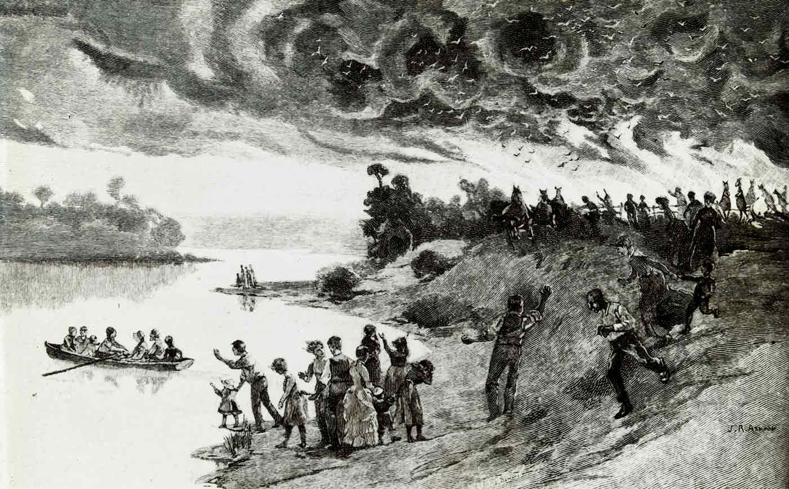

Bushfire and Gold
Apart from the dry conditions, the fires probably had various causes. One might have been lightning strikes, but historian Tom Griffiths has also raised the possibility that some of the fires may have been caused by prospectors seeking to make the search for gold easier.
Black Thursday occured during a time when many were looking for gold. Although gold was officially ‘discovered’ in Victoria later in 1851, there had already been scattered discoveries in the 1840s.
"Black Thursday," on 6th February; second, the elevation of Port Phillip district into the colony of Victoria, on 1st July; third, the discovery of gold, which was practically and substantially that of Ballarat, during the third week of September.
By 1851 there were expeditions looking for gold in several parts of the colony, including the Pyrenees and Plenty ranges. Dense vegetation was a real problem for prospectors looking for surface gold, and so they often burnt it back.
At the very least, the huge areas burned in February 1851 may have contributed to the major gold discoveries which soon followed.